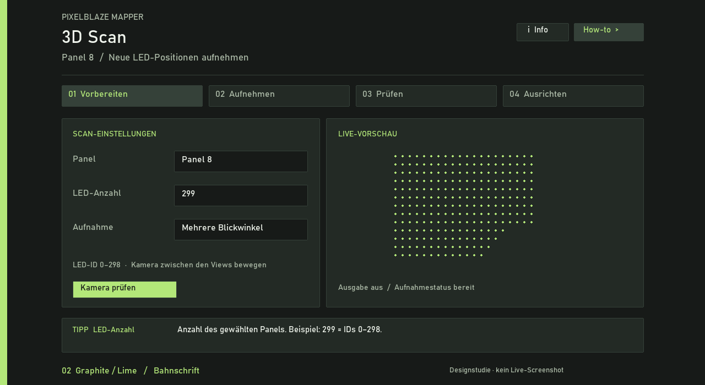
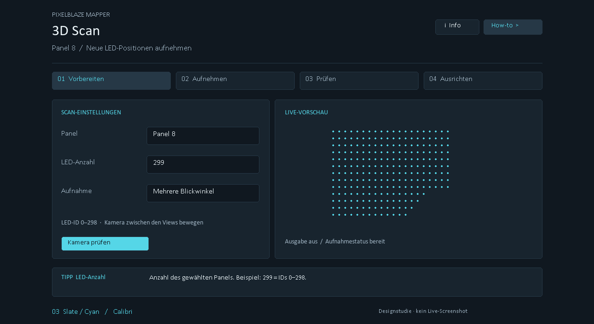
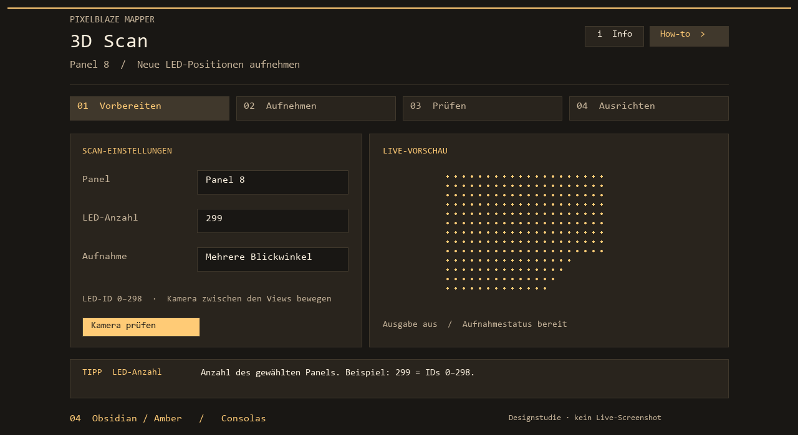
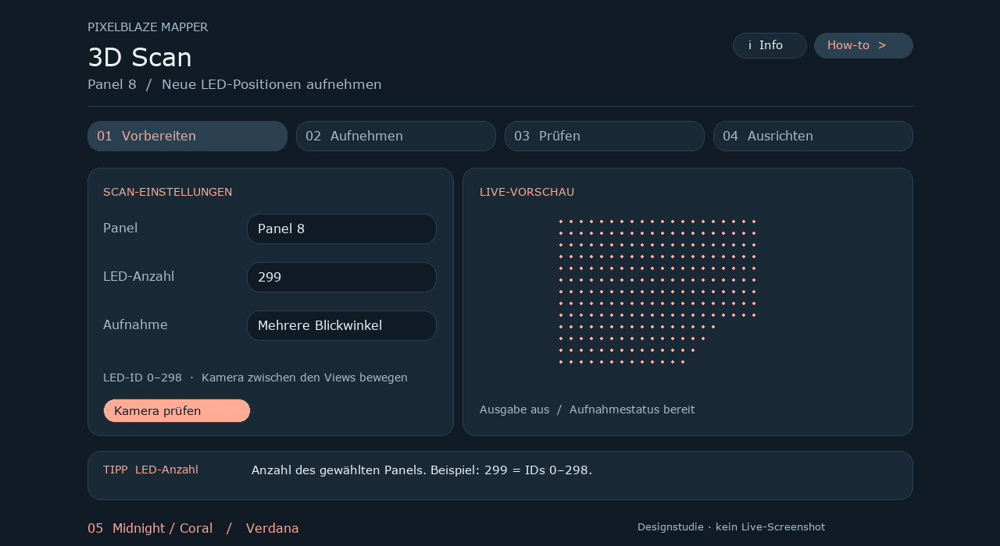
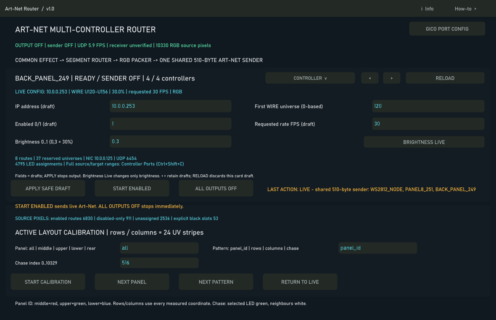

Visuelle Vergleichsstudien, keine Live-Screenshots. Nur Variante 01 basiert auf dem Art-Net-Webinterface. Gewählt wurde Variante 03 als Grundlage, anschließend mit Bahnschrift und den unten beschriebenen Textrollen verfeinert. Die fünf Bilder bleiben als ursprüngliche Vergleichsentwürfe erhalten.
01 · Router / Blue Violet
Segoe UI · Vorbild: vorhandenes Art-Net-Webinterface

02 · Graphite / Lime
Bahnschrift · Eigenständige Designrichtung

03 · Slate / Cyan
Calibri · Eigenständige Designrichtung

04 · Obsidian / Amber
Consolas · Eigenständige Designrichtung

05 · Midnight / Coral
Verdana · Eigenständige Designrichtung

Gewählte Releasegestaltung
Bahnschrift; Hintergrund #101820, Flächen #232a25, Rahmen #354139. Titel und Labels #e1e5e6; Werte, Variablen und Beispiele Cyan #55d6e7; Buttons, Funktionen und aktive Beschriftung Graphit #aeb7ba; sekundärer Text #a9b2b5. Zusammengehörige Aktionen sind gruppiert, Bedienelemente abgerundet.
Die ursprüngliche Auswahlgrafik zeigt eine frühere Zwischenfassung. Maßgeblich sind die aktuellen Screenshots der fertigen Dialoge.

Zum aktuellen Bedienhandbuch